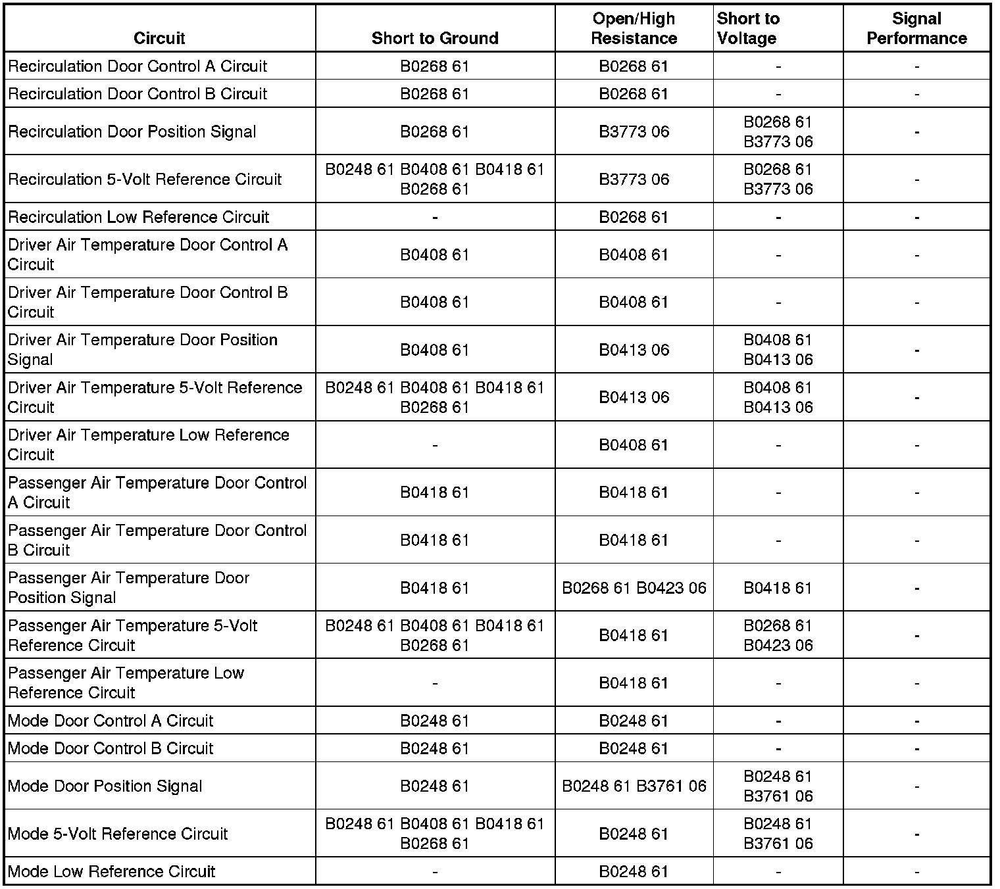

B0248
DTC B0248, B0268, B0408, B0413, B0418, B0423, B3761, or B3773
Diagnostic Instructions
* Perform the Diagnostic System Check - Vehicle (Initial Inspection and Diagnostic Overview) prior to using this diagnostic procedure.
* Review Strategy Based Diagnosis (Initial Inspection and Diagnostic Overview) for an overview of the diagnostic approach.
* Diagnostic Procedure Instructions (Initial Inspection and Diagnostic Overview) provides an overview of the diagnostic category.
DTC Descriptors
DTC B0248 61
- Air Flow Control 3 Circuit Actuator Stuck
DTC B0268 61
- Air Flow Control 7 Circuit Actuator Stuck
DTC B0408 61
- Temperature Control 1 Circuit Actuator Stuck
DTC B0413 06
- Temperature Control 1 Feedback Circuit Short to Ground or Open
DTC B0418 61
- Temperature Control 2 Circuit Actuator Stuck
DTC B0423 06
- Temperature Control 2 Feedback Circuit Short to Ground or Open
DTC B3761 06
- Air Flow Control 3 Feedback Circuit Short to Ground or Open
DTC B3773 06
- Air Flow Control 7 Feedback Circuit Short to Ground or Open
Diagnostic Fault Information

Circuit/System Description
The HVAC control module controls the HVAC door actuators to regulate the airflow through the HVAC system. Each actuator consists of an electric motor and a potentiometer. The module supplies a low reference and 5-volt reference source voltage to the potentiometer. The HVAC control module monitors the voltage drop across the potentiometer on the door position signal circuit. When the actuator shaft rotates, the voltage on the door position signal circuit changes. The HVAC control module supplies the actuator motor with a 12-volt control circuit and a ground control circuit. The HVAC module controls the direction of the actuator door by changing the polarity of the control circuits.
Conditions for Running the DTC
* The ignition is ON.
* Ignition voltage is between 9-16 volts.
* The HVAC module is ON.
Conditions for Setting the DTC
The actual door position differs from the commanded door position by more than 4 counts or the HVAC control module detects the door position signal circuit is less than 7 counts or greater than 250 counts.
Action Taken When the DTC Sets
Driver A and driver B circuits are deactivated for the appropriate actuator.
Conditions for Clearing the DTC
* The DTC becomes history when the HVAC control module no longer detects the condition that set the DTC.
* The history DTC will clear after 50 fault-free ignition cycles.
* The DTC can be cleared with a scan tool.
Reference Information
Schematic Reference
HVAC Schematics (Electrical Diagrams)
Connector End View Reference
Component Connector End Views (Connector Views)
Description and Operation
Automatic HVAC Description and Operation (Automatic HVAC Description and Operation (Part 1))
Electrical Information Reference
* Circuit Testing (Component Tests and General Diagnostics)
* Connector Repairs (Component Tests and General Diagnostics)
* Testing for Intermittent Conditions and Poor Connections (Component Tests and General Diagnostics)
* Wiring Repairs (Component Tests and General Diagnostics)
Scan Tool Reference
Control Module References (Programming and Relearning)
Circuit/System Verification
Ignition ON, command the appropriate actuator to 100 percent with a scan tool. The scan tool should display between 224 and 230 counts on the mode actuator, all other actuators should display between 199 and 205 counts.
Circuit/System Testing
1. Ignition OFF, test for less than 1 ohm of resistance between the low reference circuit and ground.
• If greater than 1 ohm, test the low reference circuit for a short to voltage or an open/high resistance. If the circuit tests normal, replace the HVAC control module.
2. Ignition ON, test for 4.8-5.2 volts between the 5-volt reference circuit and ground.
• If less than 4.8 volts, test the 5-volt reference circuit for a short to ground or an open/high resistance. If the circuit tests normal, replace the HVAC control module.
• If greater than 5.2 volts, test the 5-volt reference circuit for a short to voltage. If the circuit tests normal, replace the HVAC control module.
3. Verify the appropriate scan tool parameter is less than 4 counts.
• If greater than 4 counts, test the signal circuit terminal 3 for a short to ground. If the circuit tests normal, replace the HVAC control module.
4. Install a 3-amp fused jumper wire between the signal circuit terminal 3 and the low reference circuit terminal. Verify the appropriate scan tool parameter is greater than 250 counts.
• If less than 250 counts, test the signal circuit for a short to voltage or an open/high resistance. If the circuit tests normal, replace the HVAC control module.
5. Ignition ON, after 30 seconds verify that a test lamp illuminates between control circuit A terminal and B+.
• If the test lamp does not illuminate, test the control circuit for a short to voltage or an open/high resistance. If circuit tests normal replace the HVAC control module.
6. Ignition OFF, verify that the test lamp does not illuminate between control circuit A terminal and B+.
• If the test lamp illuminate, test the control circuit for a short to ground. If circuit tests normal replace the HVAC control module.
7. Ignition ON, after 30 seconds verify that a test lamp illuminates between control circuit B terminal and B+.
• If the test lamp does not illuminate, test the control circuit for a short to voltage or an open/high resistance. If circuit tests normal replace the HVAC control module.
8. Ignition OFF, verify that the test lamp does not illuminate between control circuit B terminal and B+.
• If the test lamp illuminate, test the control circuit for a short to ground. If circuit tests normal replace the HVAC control module.
9. If all circuits test normal, replace the actuator.
Repair Instructions
Perform the Diagnostic Repair Verification (Verification Tests) after completing the diagnostic procedure.
* Control Module References (Programming and Relearning)
* Recirculation Actuator Replacement (Right Hand Drive) (Recirculation Actuator Replacement (Right Hand Drive))Recirculation Actuator Replacement (Left Hand Drive) (Recirculation Actuator Replacement (Left Hand Drive))
* Mode Actuator Replacement (Mode Actuator Replacement)
* Air Temperature Actuator Replacement - Left Side (Air Temperature Actuator Replacement - Left Side)
* Air Temperature Actuator Replacement - Right Side (Air Temperature Actuator Replacement - Right Side)